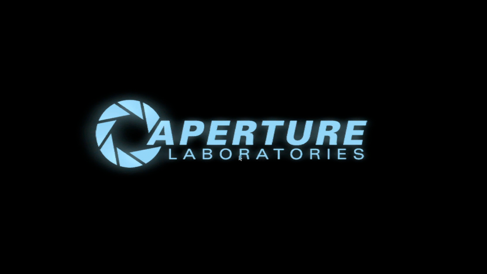
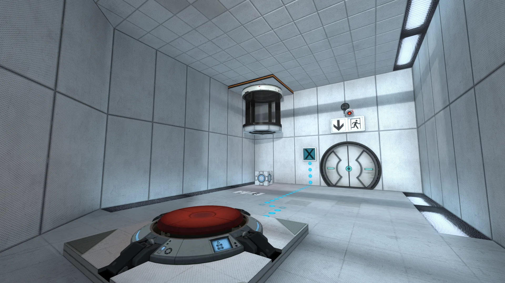
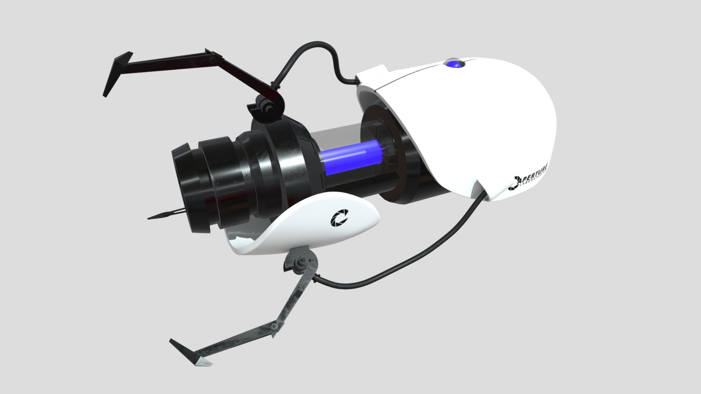
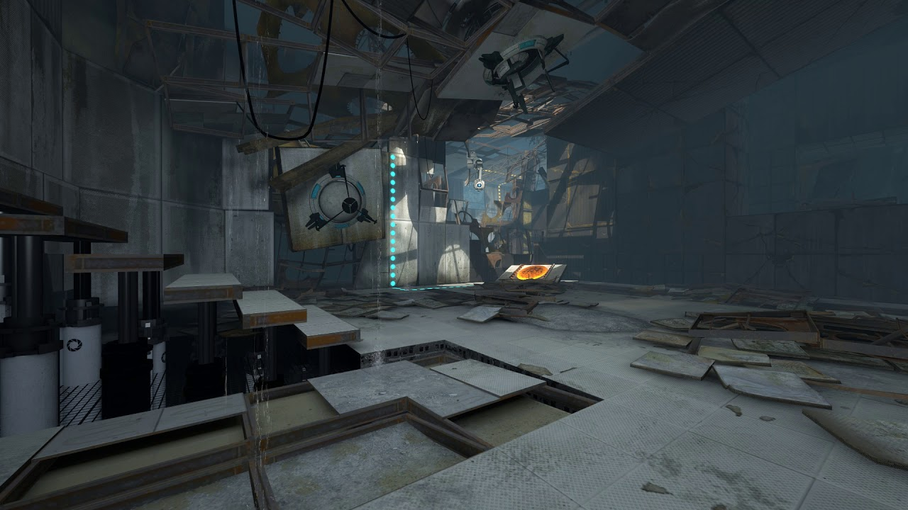
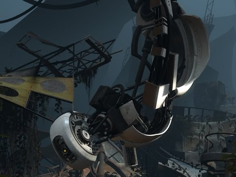
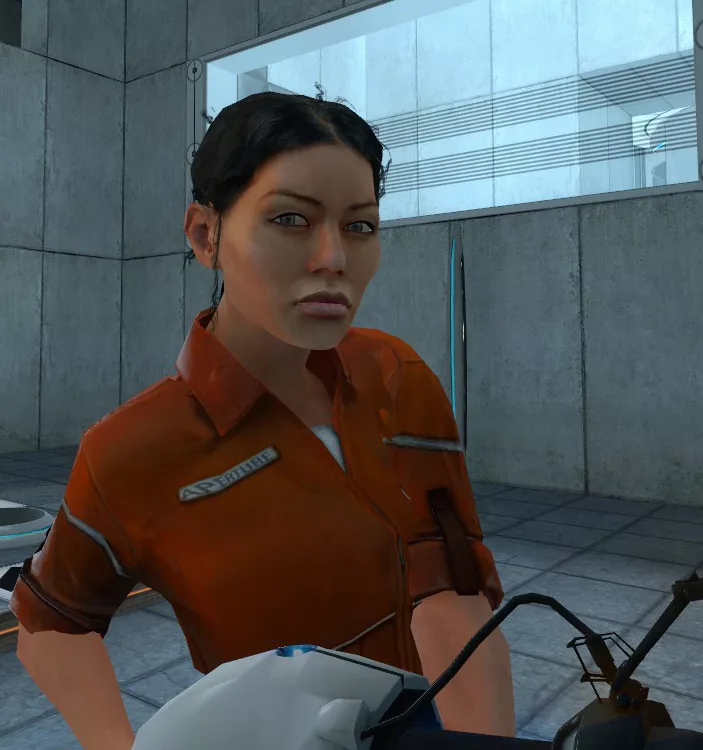
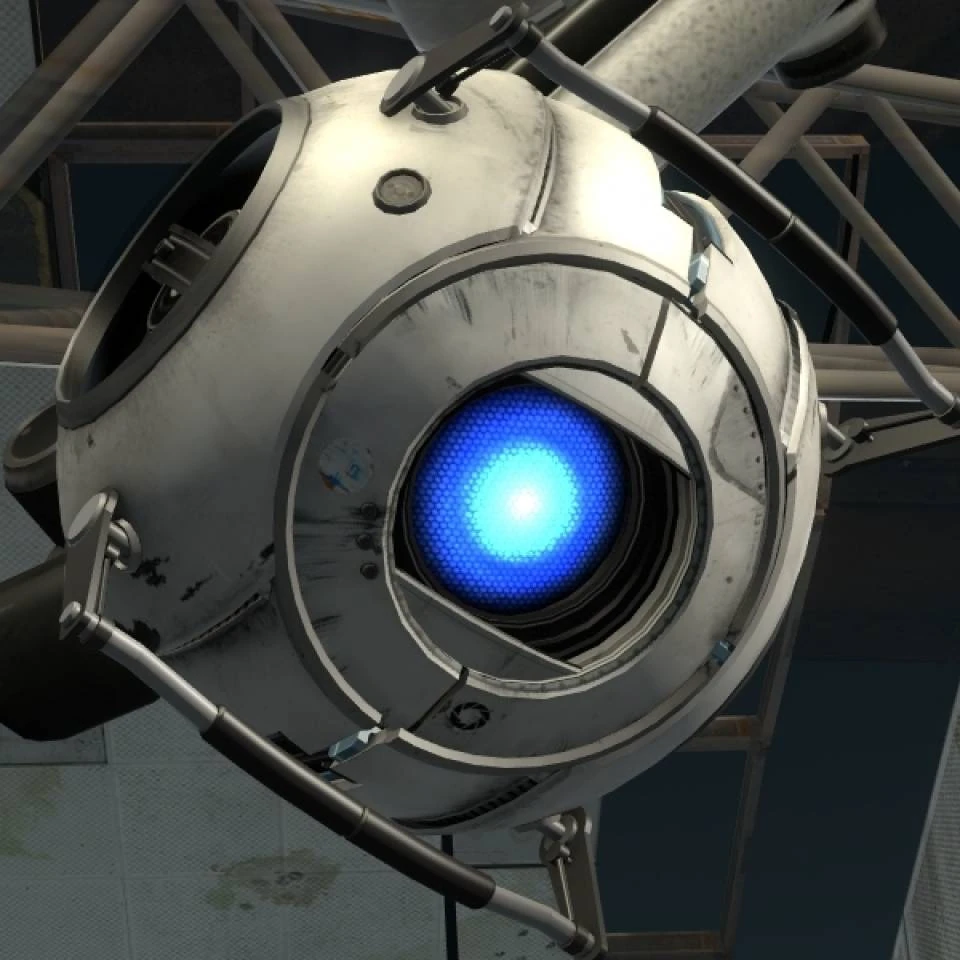

Portal 2 představuje unikátní kombinaci logických hádanek, humoru a futuristické atmosféry společnosti Aperture Science. Hra od Valve se stala jedním z nejlépe hodnocených titulů historie.
Aperture Science je futuristická výzkumná laboratoř, kde probíhají nebezpečné vědecké experimenty. Společnost založil excentrický vědec Cave Johnson.
Podzemní komplex obsahuje stovky testovacích komor, robotické systémy a pokročilé technologie. Právě zde se odehrává celý příběh Portal 2.
Laboratoře působí zároveň fascinujícím i opuštěným dojmem, což vytváří ikonickou atmosféru hry.

Hlavním nástrojem hry je Aperture Science Handheld Portal Device, známý jako Portal Gun.
Zařízení umožňuje vytvářet dva propojené portály, které mění pohyb hráče a fyziku prostoru.
Portal 2 kombinuje logické hádanky, fyzikální mechaniky a přesné načasování. Hráč musí využívat portály, lasery, gelové povrchy a pohyblivé platformy.




GLaDOS je umělá inteligence Aperture Science. Je známá svým sarkasmem, temným humorem a nebezpečnými experimenty. Patří mezi nejslavnější herní antagonisty.

Chell je hlavní protagonistka série Portal. Nemluví, ale její inteligence a schopnost řešit testy ji činí jednou z nejzajímavějších herních postav.

Wheatley je robotický personality core, který hráče doprovází během hry. Je komický, chaotický a stal se oblíbenou postavou fanoušků.